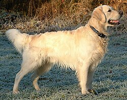

Golden Retriever

The Golden Retriever is a Scottish breed of retriever dog of medium size. It is characterised by a gentle and affectionate nature and a striking golden coat. It is a working dog, and registration is subject to successful completion of a working trial.[2] It is commonly kept as a companion dog and is among the most frequently registered breeds in several Western countries; some may compete in dog shows or obedience trials, or work as guide dogs.
The Golden Retriever was bred by Sir Dudley Marjoribanks at his Scottish estate Guisachan in the late nineteenth century. He cross-bred Flat-coated Retrievers with Tweed Water Spaniels, with some further infusions of Red Setter, Labrador Retriever and Bloodhound. It was recognised by the Kennel Club in 1913, and during the interwar period spread to many parts of the world.
The Golden Retriever was developed in Scotland in the nineteenth century by Sir Dudley Marjoribanks (later to become Baron Tweedmouth) from Flat-coated Retrievers judiciously crossed with Tweed Water Spaniels and some other British dog breeds.[3][4] Prior to the 1952 publication of the very detailed stud book which had been meticulously maintained by Marjoribanks, a number of romantic tales were published about the origins of the breed.[3][4][5]
In the 1860s Marjoribanks set out to create what to his mind was the ultimate breed of retriever at his Scottish estate Guisachan.[3][6] He started by acquiring a yellow-coloured Flat-coated Retriever dog called Nous;[note 1] Nous had been whelped in June 1864 and was the only yellow pup in an otherwise all black-coloured litter.[3][5] Whilst uncommon, occasionally liver, brown, golden or yellow-coloured purebred Flat-coated Retriever pups are whelped to matings of two black parents.[4][7] It is the pedigree of Nous that was the source for the romantic tales of the heritage of the Golden Retriever.[3] One early account claimed Nous was purchased from a Russian circus trainer in Brighton, another claimed he was bought from a cobbler, and yet another claimed a gypsy.[3] The stud book states that Nous was a Flat-coated Retriever bred by Lord Chichester on his Stanmer Park estate near Brighton.[6][7][8]
In 1868 Nous was mated to a Tweed Water Spaniel bitch named Belle, who is recorded in the stud book as being whelped in 1863 and being of "Ladykirk breeding".[3][7] The litter from this mating consisted of four yellow pups, Primrose, Ada, Cowslip and Crocus.[8][9] The best bitch from this litter, Cowslip, was mated to a Tweed Water Spaniel called Tweed with the mating producing a bitch pup called Topsy.[6] Cowslip was subsequently mated to a Red Setter called Sampson; that mating produced a dog pup called Jack.[6] Topsy was mated with a black Flat-coated Retriever called Sambo and a bitch pup from that litter, Zoe, was mated back to Jack and two pups from that mating were retained, a dog called Nous II and a bitch called Gill.[6] Gill was mated to a black Labrador Retriever called Tracer, and a bitch pup from that mating, Queenie, was mated back to Nous II; all Golden Retrievers descend from this mating.[6] The progeny from these various matings varied in colour from pure black to light cream, but it was the golden-coloured ones that were retained and mated to each other, forming the foundation stock of the Golden Retriever breed.[3] Marjoribanks is also known to have used a sandy-coloured Bloodhound and another Labrador in subsequent years of the breeding programme.